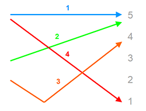

Neutral Tone
Pronounced quickly and without change in frequency.
Has no tone mark.
Tone Changes
- 3 + 1, 2, 4
voice is dropped as in 4 then continues on lower note
買東西 - mǎi dōng xī - to buy things
- 3 + 3 (1 or 2 syllables)
3 tone is only the last one in the sequence, others are changed to 2
買水果 - mǎi shuǐ guǒ - mái shuí guǒ - buy fruits
- 3 + 3 (more than 2 syllables)
odd tones are changed to 2, even tones remain 3,
我有两把椅子 - wŏ yŏu liăng bă yĭzi - wó yŏu / liáng bá yĭzi - I have two chairs
- 一 yī + 1, 2, 3 = 4 tone
- 一 yī + 4 = 2 tone
- 不 bù + 1, 2, 3 = 4 tone
- 不 bù + 4 = 2 tone